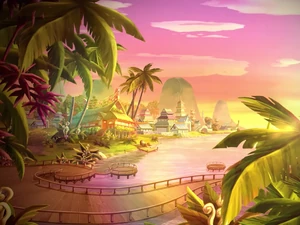

Es la ciudad principal de la Dimensión Mágica, el centro educativo y mágico. Se
encuentran escuelas como Alfea, escuela para hadas (donde estudian las Winx);
Torre Nube, escuela para brujas (asisten las Trix); Fuente Roja (Red Fountain),
escuela para especialistas (guerreros sin poderes mágicos).
Es el hogar de Bloom. Es un mundo helado y mágico, cuna del Fuego del Dragón,
fuente de la magia en la Dimensión Mágica. Fue destruido por las Brujas
Ancestrales, pero luego restaurado.
Es el hogar de Stella. Es un reino radiante y lleno de luz solar, gobernado por
el padre de Stella, el rey Radius. Conocido por su belleza, energía solar y
deslumbrante realeza.
Es el hogar de Flora. Es un mundo de bosques, naturaleza exuberante y criaturas
mágicas. Perfecto para hadas conectadas con la flora. Verde, pacífico y
espiritualmente armonioso.
Es el hogar de Layla/Aisha. Es un mundo acuático con vastos océanos, islas y
criaturas marinas. Tiene una sociedad dividida entre los habitantes terrestres
y los acuáticos (como las Sirenix).

Es el hogar de Musa. Es el mundo de la música y el sonido. Todo está influenciado
por ritmos, armonías y vibraciones musicales. Se respira arte, creatividad y
sensibilidad sonora.
Es el hogar de Tecna. Es un mundo tecnológicamente avanzado, con ciudades
futuristas y habitantes muy lógicos. La magia y la tecnología están
perfectamente integradas.